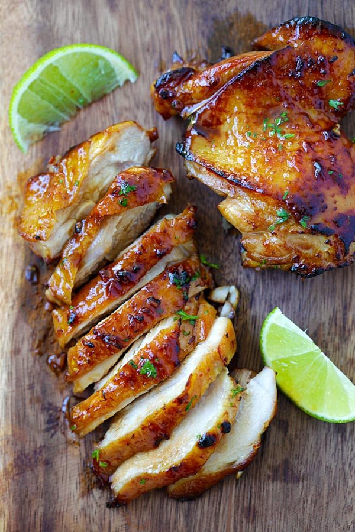

Honey Lime Chicken
Submitted by Alli Pichette
This honey lime chicken is a perfect quick and easy summer staple that your family will love. A perfect blend of sticky sweet and savory chicken.
It can be prepared with both skinless and boneless chicken thighs, breast or drumsticks, and can also be cooked on a skillet, cast-iron pan, or on the grill.
Ingredients
- 1 lb chicken thighs, deboned, skin-on
- 2 cloves garlic, minced
- 1 heaping tablespoon honey
- 1 tablespoon soy sauce
- 1 tablespoon lime juice
- Pinch of cayenne pepper
- Pinch of salt
- Chopped parsley
- Lime wedges
Instructions
- Preheat the oven to 400F.
- Combine the chicken thighs with garlic, honey, soy sauce, lime juice, cayenne pepper and salt.
- Stir to combine well.
- Transfer the chicken and the honey mixture to a baking sheet lined with parchment paper or aluminum foil.
- Cover the chicken with aluminum foil to prevent burning.
- Bake the chicken for 20 minutes, or until cooked.
- Broil the chicken for 1 minute to char the chicken skin.
- Remove from heat, garnish with parsley and serve immediately with some lime wedges.